Last updated: 2026-09-18
Checks: 7 0
Knit directory: misc/analysis/
This reproducible R Markdown analysis was created with workflowr (version 1.7.2). The Checks tab describes the reproducibility checks that were applied when the results were created. The Past versions tab lists the development history.
Great! Since the R Markdown file has been committed to the Git repository, you know the exact version of the code that produced these results.
Great job! The global environment was empty. Objects defined in the global environment can affect the analysis in your R Markdown file in unknown ways. For reproduciblity it’s best to always run the code in an empty environment.
The command set.seed(1) was run prior to running the code in the R Markdown file. Setting a seed ensures that any results that rely on randomness, e.g. subsampling or permutations, are reproducible.
Great job! Recording the operating system, R version, and package versions is critical for reproducibility.
Nice! There were no cached chunks for this analysis, so you can be confident that you successfully produced the results during this run.
Great job! Using relative paths to the files within your workflowr project makes it easier to run your code on other machines.
Great! You are using Git for version control. Tracking code development and connecting the code version to the results is critical for reproducibility.
The results in this page were generated with repository version 7bcee6e. See the Past versions tab to see a history of the changes made to the R Markdown and HTML files.
Note that you need to be careful to ensure that all relevant files for the analysis have been committed to Git prior to generating the results (you can use wflow_publish or wflow_git_commit). workflowr only checks the R Markdown file, but you know if there are other scripts or data files that it depends on. Below is the status of the Git repository when the results were generated:
Ignored files:
Ignored: .DS_Store
Ignored: .Rhistory
Ignored: .Rproj.user/
Ignored: .claude/
Ignored: GSE87571/
Ignored: analysis/.RData
Ignored: analysis/.Rhistory
Ignored: analysis/ALStruct_cache/
Ignored: analysis/binary_quad_comparison_cache/
Ignored: analysis/ebproj_01.html
Ignored: analysis/gset_G63_cache/
Ignored: data/.Rhistory
Ignored: data/hgdp_hap_matrix.rds
Ignored: data/methylation-data-for-matthew.rds
Ignored: data/pbmc/
Ignored: data/pbmc_purified.RData
Ignored: data/refGene_hg19.txt.gz
Ignored: data/tgp_data_matrix.rds
Ignored: data/tgp_meta.rds
Ignored: output/admixture/
Untracked files:
Untracked: .dropbox
Untracked: GSE41037/
Untracked: Icon
Untracked: Rplots.pdf
Untracked: analysis/GHstan.Rmd
Untracked: analysis/GTEX-cogaps.Rmd
Untracked: analysis/PACS.Rmd
Untracked: analysis/Rplot.png
Untracked: analysis/Rplots.pdf
Untracked: analysis/SPCAvRP.rmd
Untracked: analysis/abf_comparisons.Rmd
Untracked: analysis/admm_02.Rmd
Untracked: analysis/admm_03.Rmd
Untracked: analysis/binary_quad_comparison.Rmd
Untracked: analysis/bispca.Rmd
Untracked: analysis/cache/
Untracked: analysis/cholesky.Rmd
Untracked: analysis/compare-transformed-models.Rmd
Untracked: analysis/cormotif.Rmd
Untracked: analysis/cp_ash.Rmd
Untracked: analysis/eQTL.perm.rand.pdf
Untracked: analysis/eb_power2.Rmd
Untracked: analysis/eb_prepilot.Rmd
Untracked: analysis/eb_var.Rmd
Untracked: analysis/ebpmf1.Rmd
Untracked: analysis/ebpmf_sla_text.Rmd
Untracked: analysis/ebproj_01.Rmd
Untracked: analysis/ebproj_newton.Rmd
Untracked: analysis/ebspca_sims.Rmd
Untracked: analysis/explore_psvd.Rmd
Untracked: analysis/fa_check_identify.Rmd
Untracked: analysis/fa_iterative.Rmd
Untracked: analysis/fastica_1kg_unwhitened.Rmd
Untracked: analysis/fastica_heated.Rmd
Untracked: analysis/fastica_unwhitened.Rmd
Untracked: analysis/fastica_unwhitened_optim.Rmd
Untracked: analysis/flash_cov_overlapping_groups_init.Rmd
Untracked: analysis/flash_test_tree.Rmd
Untracked: analysis/flashier_newgroups.Rmd
Untracked: analysis/flashier_nmf_triples.Rmd
Untracked: analysis/flashier_pbmc.Rmd
Untracked: analysis/flashier_snn_shifted_prior.Rmd
Untracked: analysis/greedy_ebpmf_exploration_00.Rmd
Untracked: analysis/gset_G63.Rmd
Untracked: analysis/ieQTL.perm.rand.pdf
Untracked: analysis/lasso_em_03.Rmd
Untracked: analysis/m6amash.Rmd
Untracked: analysis/mash_bhat_z.Rmd
Untracked: analysis/mash_ieqtl_permutations.Rmd
Untracked: analysis/matrix_beta.Rmd
Untracked: analysis/meth_flash_01.Rmd
Untracked: analysis/methylation_example.Rmd
Untracked: analysis/mixsqp.Rmd
Untracked: analysis/mr.ash_lasso_init.Rmd
Untracked: analysis/mr.mash.test.Rmd
Untracked: analysis/mr_ash_modular.Rmd
Untracked: analysis/mr_ash_parameterization.Rmd
Untracked: analysis/mr_ash_ridge.Rmd
Untracked: analysis/mv_gaussian_message_passing.Rmd
Untracked: analysis/nejm.Rmd
Untracked: analysis/nmf_bg.Rmd
Untracked: analysis/nonneg_underapprox.Rmd
Untracked: analysis/normal_conditional_on_r2.Rmd
Untracked: analysis/normalize.Rmd
Untracked: analysis/pbmc.Rmd
Untracked: analysis/pca_binary_weighted.Rmd
Untracked: analysis/pca_l1.Rmd
Untracked: analysis/poisson_nmf_approx.Rmd
Untracked: analysis/poisson_shrink.Rmd
Untracked: analysis/poisson_transform.Rmd
Untracked: analysis/qrnotes.txt
Untracked: analysis/ridge_iterative_02.Rmd
Untracked: analysis/ridge_iterative_splitting.Rmd
Untracked: analysis/samps/
Untracked: analysis/sc_bimodal.Rmd
Untracked: analysis/shrinkage_comparisons_changepoints.Rmd
Untracked: analysis/susie_cov.Rmd
Untracked: analysis/susie_en.Rmd
Untracked: analysis/susie_z_investigate.Rmd
Untracked: analysis/svd-timing.Rmd
Untracked: analysis/temp.RDS
Untracked: analysis/temp.Rmd
Untracked: analysis/test-figure/
Untracked: analysis/test.Rmd
Untracked: analysis/test.Rpres
Untracked: analysis/test.md
Untracked: analysis/test_qr.R
Untracked: analysis/test_sparse.Rmd
Untracked: analysis/tree_dist_top_eigenvector.Rmd
Untracked: analysis/z.txt
Untracked: code/coordinate_descent_symNMF.R
Untracked: code/multivariate_testfuncs.R
Untracked: code/rqb.hacked.R
Untracked: code/write_plink_bed.R
Untracked: data/4matthew/
Untracked: data/4matthew2/
Untracked: data/E-MTAB-2805.processed.1/
Untracked: data/ENSG00000156738.Sim_Y2.RDS
Untracked: data/G63
Untracked: data/GDS5363_full.soft.gz
Untracked: data/GSE41265_allGenesTPM.txt
Untracked: data/Muscle_Skeletal.ACTN3.pm1Mb.RDS
Untracked: data/P.rds
Untracked: data/Thyroid.FMO2.pm1Mb.RDS
Untracked: data/bmass.HaemgenRBC2016.MAF01.Vs2.MergedDataSources.200kRanSubset.ChrBPMAFMarkerZScores.vs1.txt.gz
Untracked: data/bmass.HaemgenRBC2016.Vs2.NewSNPs.ZScores.hclust.vs1.txt
Untracked: data/bmass.HaemgenRBC2016.Vs2.PreviousSNPs.ZScores.hclust.vs1.txt
Untracked: data/eb_prepilot/
Untracked: data/finemap_data/fmo2.sim/b.txt
Untracked: data/finemap_data/fmo2.sim/dap_out.txt
Untracked: data/finemap_data/fmo2.sim/dap_out2.txt
Untracked: data/finemap_data/fmo2.sim/dap_out2_snp.txt
Untracked: data/finemap_data/fmo2.sim/dap_out_snp.txt
Untracked: data/finemap_data/fmo2.sim/data
Untracked: data/finemap_data/fmo2.sim/fmo2.sim.config
Untracked: data/finemap_data/fmo2.sim/fmo2.sim.k
Untracked: data/finemap_data/fmo2.sim/fmo2.sim.k4.config
Untracked: data/finemap_data/fmo2.sim/fmo2.sim.k4.snp
Untracked: data/finemap_data/fmo2.sim/fmo2.sim.ld
Untracked: data/finemap_data/fmo2.sim/fmo2.sim.snp
Untracked: data/finemap_data/fmo2.sim/fmo2.sim.z
Untracked: data/finemap_data/fmo2.sim/pos.txt
Untracked: data/logm.csv
Untracked: data/m.cd.RDS
Untracked: data/m.cdu.old.RDS
Untracked: data/m.new.cd.RDS
Untracked: data/m.old.cd.RDS
Untracked: data/mainbib.bib.old
Untracked: data/mat.csv
Untracked: data/mat.txt
Untracked: data/mat_new.csv
Untracked: data/matrix_lik.rds
Untracked: data/paintor_data/
Untracked: data/running_data_chris.csv
Untracked: data/running_data_matthew.csv
Untracked: data/temp.txt
Untracked: data/y.txt
Untracked: data/y_f.txt
Untracked: data/zscore_jointLCLs_m6AQTLs_susie_eQTLpruned.rds
Untracked: data/zscore_jointLCLs_random.rds
Untracked: explore_udi.R
Untracked: output/fit.k10.rds
Untracked: output/fit.nn.pbmc.purified.rds
Untracked: output/fit.nn.rds
Untracked: output/fit.nn.s.001.rds
Untracked: output/fit.nn.s.01.rds
Untracked: output/fit.nn.s.1.rds
Untracked: output/fit.nn.s.10.rds
Untracked: output/fit.snn.s.001.rds
Untracked: output/fit.snn.s.01.nninit.rds
Untracked: output/fit.snn.s.01.rds
Untracked: output/fit.varbvs.RDS
Untracked: output/fit2.nn.pbmc.purified.rds
Untracked: output/glmnet.fit.RDS
Untracked: output/snn07.txt
Untracked: output/snn34.txt
Untracked: output/test.bv.txt
Untracked: output/test.gamma.txt
Untracked: output/test.hyp.txt
Untracked: output/test.log.txt
Untracked: output/test.param.txt
Untracked: output/test2.bv.txt
Untracked: output/test2.gamma.txt
Untracked: output/test2.hyp.txt
Untracked: output/test2.log.txt
Untracked: output/test2.param.txt
Untracked: output/test3.bv.txt
Untracked: output/test3.gamma.txt
Untracked: output/test3.hyp.txt
Untracked: output/test3.log.txt
Untracked: output/test3.param.txt
Untracked: output/test4.bv.txt
Untracked: output/test4.gamma.txt
Untracked: output/test4.hyp.txt
Untracked: output/test4.log.txt
Untracked: output/test4.param.txt
Untracked: output/test5.bv.txt
Untracked: output/test5.gamma.txt
Untracked: output/test5.hyp.txt
Untracked: output/test5.log.txt
Untracked: output/test5.param.txt
Unstaged changes:
Modified: analysis/eb_snmu.Rmd
Modified: analysis/ebnm_binormal.Rmd
Modified: analysis/ebpower.Rmd
Modified: analysis/fastica_asymmetric_03.Rmd
Modified: analysis/fastica_bm_spd.Rmd
Modified: analysis/flashier_log1p.Rmd
Modified: analysis/flashier_sla_text.Rmd
Modified: analysis/logistic_z_scores.Rmd
Modified: analysis/mr_ash_pen.Rmd
Modified: analysis/nmu_em.Rmd
Modified: analysis/susie_flash.Rmd
Modified: analysis/tap_free_energy.Rmd
Modified: misc.Rproj
Note that any generated files, e.g. HTML, png, CSS, etc., are not included in this status report because it is ok for generated content to have uncommitted changes.
These are the previous versions of the repository in which changes were made to the R Markdown (analysis/fastica_1kg_structure.Rmd) and HTML (docs/fastica_1kg_structure.html) files. If you’ve configured a remote Git repository (see ?wflow_git_remote), click on the hyperlinks in the table below to view the files as they were in that past version.
| File | Version | Author | Date | Message |
|---|---|---|---|---|
| Rmd | 7bcee6e | Matthew Stephens | 2026-09-18 | Add structure plots from the 1000 Genomes fastICA sources |
This follows up fastica_1kg, which fitted fastICA with the \(x|x|\) contrast to the 1000 Genomes genotype data and argued that the objects worth taking seriously are the unconstrained rank-1 maxima rather than the factors of any one rank-\(r\) fit. Here we turn those sources into structure plots.
A structure plot needs non-negative memberships, which signed ICA sources are not. But the \(x|x|\) sources are one-sided — most loadings near zero, a minority large and positive — so their positive parts may serve directly. Take \[
A = \max(L, 0), \qquad X \approx AB + E \ \text{fitted by least squares},
\] and if \(B\) comes out non-negative, rescale each row of \(B\) to sum to 1 and scale the corresponding column of \(A\) to compensate. The rows of \(A\) are then memberships on a common scale, ready for a stacked bar plot. Their sums need not be 1, which fastTopics::structure_plot handles by letting bars differ in height.
Two points about the centering, which is the thing that makes this awkward. There is no intercept column in \(A\), and none is needed: every individual has at least one positive source, so the positive parts already span the mean. Adding one is actively harmful — with an intercept the remaining rows of \(B\) become increments to allele frequency, which are necessarily signed, and about half of \(B\) goes negative. Fitting the uncentered \(X\) with no intercept is what keeps \(B\) non-negative.
Whether \(B \ge 0\) really holds is an empirical question, and it is the main thing this analysis checks.
library(ggplot2)
library(cowplot)
library(fastTopics)
meta <- readRDS("../data/tgp_meta.rds")
fit <- readRDS("../output/tgp_fastica.rds")
struct <- readRDS("../output/tgp_structure.rds")
pop_order <- c("LWK","ESN","YRI","MSL","GWD","ACB","ASW", # AFR
"CLM","MXL","PUR","PEL", # AMR
"TSI","IBS","GBR","CEU","FIN", # EUR
"PJL","GIH","ITU","STU","BEB", # SAS
"CDX","KHV","CHS","CHB","JPT") # EAS
meta$pop <- factor(as.character(meta$pop), levels = pop_order)
sp_palette <- c(AFR = "#E69F00", AMR = "#D55E00", EUR = "#7570B3",
SAS = "#1B9E77", EAS = "#0072B2")The sources come from code/fit_tgp_fastica.R, which saves every fit made in the previous analysis: the rank-\(r\) fits at \(K = 20\) and \(K = 30\) on the full data, the \(K = 30\) fit with the 40 sparse-factor individuals pruned, the two chromosome-half fits, and the rank-1 maxima of each of those four whitened spaces. The least-squares \(B\) and its diagnostics are computed separately, in code/fit_tgp_structure.R, since that needs the genotype matrix; the chromosome halves are fit against their own half of the SNPs.
sets <- setdiff(names(struct), "half_match")
tab <- do.call(rbind, lapply(sets, function(nm) {
s <- struct[[nm]]
data.frame(sources = nm, K = s$K, `frac B < -0.01` = round(s$frac_lt, 4),
min_B = round(s$min_B, 3), R2 = round(s$r2, 3),
check.names = FALSE, row.names = NULL)
}))
tab[order(tab$`frac B < -0.01`), ] sources K frac B < -0.01 min_B R2
5 pruned_maxima 14 0.0000 -0.023 0.680
9 even_maxima 10 0.0000 -0.027 0.637
7 odd_maxima 11 0.0005 -0.259 0.652
3 full_maxima 17 0.0006 -0.032 0.634
10 odd_k30_stable 15 0.0341 -0.119 0.607
11 even_k30_stable 15 0.0500 -0.235 0.579
6 odd_k30 30 0.0975 -0.606 0.668
2 full_k30 30 0.1011 -0.409 0.583
1 full_k20 20 0.1084 -0.261 0.519
8 even_k30 30 0.1172 -0.813 0.672
4 pruned_k30 30 0.1474 -0.508 0.642For every set of rank-1 maxima — full data, pruned, odd chromosomes, even chromosomes — \(B\) is non-negative to within rounding: at most 0.06% of entries below \(-0.01\), against a mean \(|B|\) of order \(0.1\). Clipping those at zero changes nothing.
For every rank-\(r\) fit it fails: 10–15% of entries below \(-0.01\), with minima from \(-0.26\) to \(-0.81\). So the construction works for the maxima and not for the rank-\(r\) factors, in all four whitened spaces independently. That is a fifth respect — after the local-maximum test, basin sizes, replication across SNP halves, and initialization experiments — in which the maxima behave like real structure and a rank-\(r\) factor set does not.
The structure plots below therefore use maxima only.
hm <- struct$half_match
src <- list(
`pruned maxima (K=14)` = list(L = fit$maxima$no_sparse$L, key = "pruned_maxima"),
`full maxima (K=17)` = list(L = fit$maxima$full$L, key = "full_maxima"),
`odd maxima (K=11)` = list(L = fit$maxima$odd$L, key = "odd_maxima"),
`even maxima (K=10)` = list(L = fit$maxima$even$L, key = "even_maxima"),
`odd K=30 stable` = list(L = fit$split$odd$fit$L[, hm$stable, drop = FALSE],
key = "odd_k30_stable"),
`even K=30 stable` = list(L = fit$split$even$fit$L[, hm$perm[hm$stable], drop = FALSE],
key = "even_k30_stable"))
# A = pmax(L, 0) with columns rescaled so the rows of B sum to 1, factors
# ordered and labelled by the populations they carry.
memberships <- function(name) {
L <- src[[name]]$L
r <- struct[[src[[name]]$key]]$r
pop <- meta$pop[match(rownames(L), meta$sample)]
w <- pmax(L, 0)^2
o <- order(colSums(w * as.integer(pop)) / colSums(w))
A <- sweep(pmax(L[, o, drop = FALSE], 0), 2, r[o], "*")
colnames(A) <- make.unique(apply(L[, o, drop = FALSE], 2, function(x) {
v <- tapply(x, pop, mean); v <- sort(v[v > 0], decreasing = TRUE)
paste(names(v)[v >= 0.3 * v[1]], collapse = "/")
}))
A <- A / mean(rowSums(A)) # bar heights on a scale of about 1
# An individual with no positive loading on any source has no membership
# representation at all; drop those and record how many.
zero <- rowSums(A) == 0
list(A = A[!zero, , drop = FALSE], pop = droplevels(pop[!zero]),
n_dropped = sum(zero), o = o)
}
plot_structure <- function(name, normalize = FALSE, colors = NULL) {
m <- memberships(name)
A <- if (normalize) m$A / rowSums(m$A) else m$A
if (is.null(colors)) colors <- Polychrome::kelly.colors()[2:(ncol(A) + 1)]
structure_plot(A, grouping = m$pop, colors = colors,
gap = 16, verbose = FALSE) +
labs(y = "membership",
title = sprintf("%s%s%s", name,
if (normalize) " (normalized)" else " (unnormalized)",
if (m$n_dropped) sprintf(" - %d individual(s) dropped",
m$n_dropped) else ""))
}The normalized plots show composition; the unnormalized ones keep the bar heights, which carry information the normalized version discards — a short bar is an individual poorly explained by all the factors in that set.
sapply(names(src), function(nm) {
h <- rowSums(memberships(nm)$A)
round(c(min = min(h), median = median(h), max = max(h)), 2)
}) pruned maxima (K=14) full maxima (K=17) odd maxima (K=11)
min 0.06 0.01 0.07
median 1.07 1.13 1.04
max 2.51 2.69 2.39
even maxima (K=10) odd K=30 stable even K=30 stable
min 0.02 0.00 0.00
median 1.05 1.09 1.02
max 2.22 3.18 9.58The cleanest set: the 14 maxima of the pruned data, all of which replicate across SNP halves and are reachable from random starts.
plot_structure("pruned maxima (K=14)", normalize = TRUE)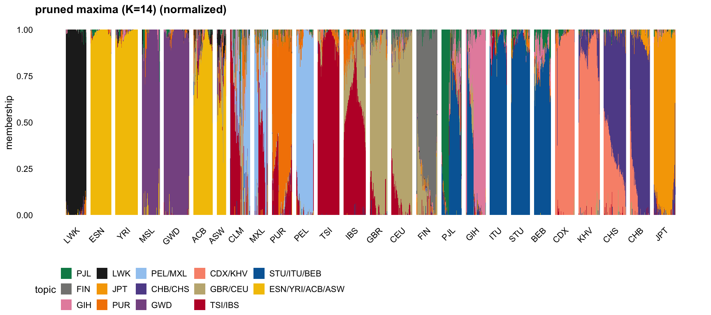
plot_structure("pruned maxima (K=14)")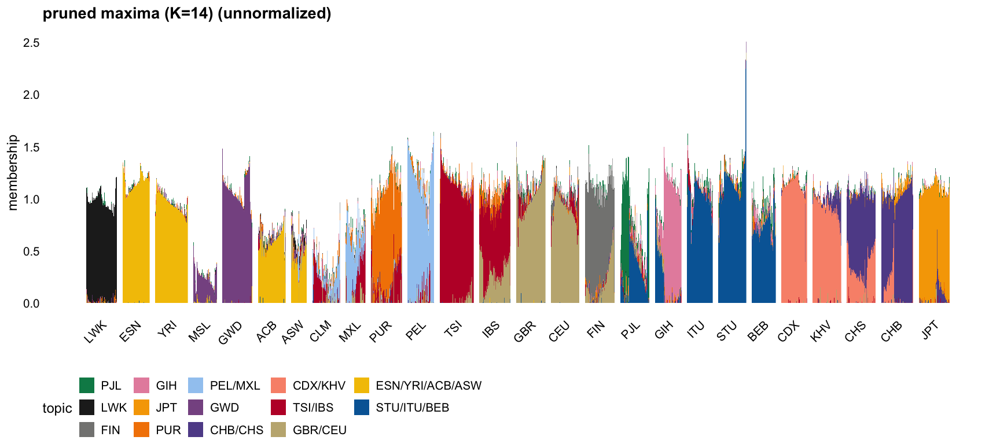
The normalized version is close to a hard population assignment — LWK 97%, ESN/YRI 98%, GWD 97%, TSI 93%, CDX 95% and JPT 92% on their own factors — with mixture where mixture is expected. ASW comes out 60% ESN/YRI with 11% GBR/CEU and 9% LWK; CLM 37% PEL/MXL and 33% TSI/IBS; IBS 61% TSI/IBS and 25% GBR/CEU; FIN 80% its own factor and 15% GBR/CEU; CHS 65% CHB/CHS and 30% CDX/KHV; PJL splits 38/42 with STU/ITU/BEB. These are the expected admixture patterns, read off ICA sources rather than fitted under a non-negativity constraint.
The same for the unpruned data, where three of the 17 maxima are the sparse relative and subgroup factors.
plot_structure("full maxima (K=17)", normalize = TRUE)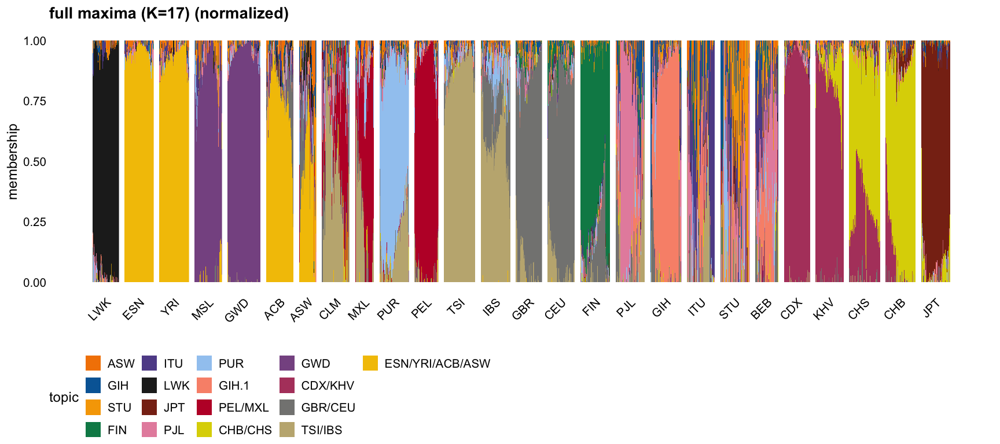
plot_structure("full maxima (K=17)")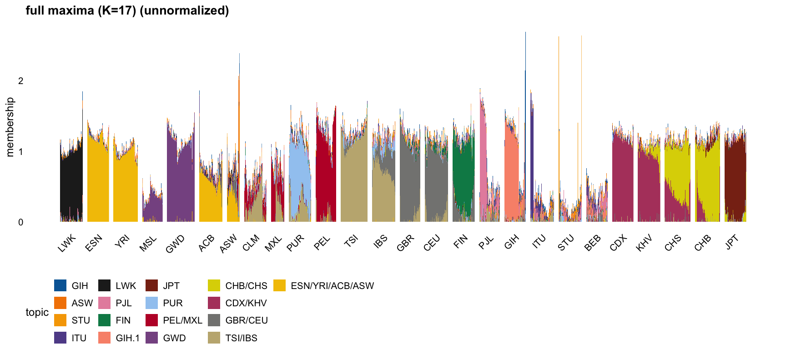
The stability check as structure plots: the halves are independent SNP sets, so agreement between the two is evidence the memberships do not depend on which markers were used. They find 11 and 10 maxima respectively.
plot_structure("odd maxima (K=11)", normalize = TRUE)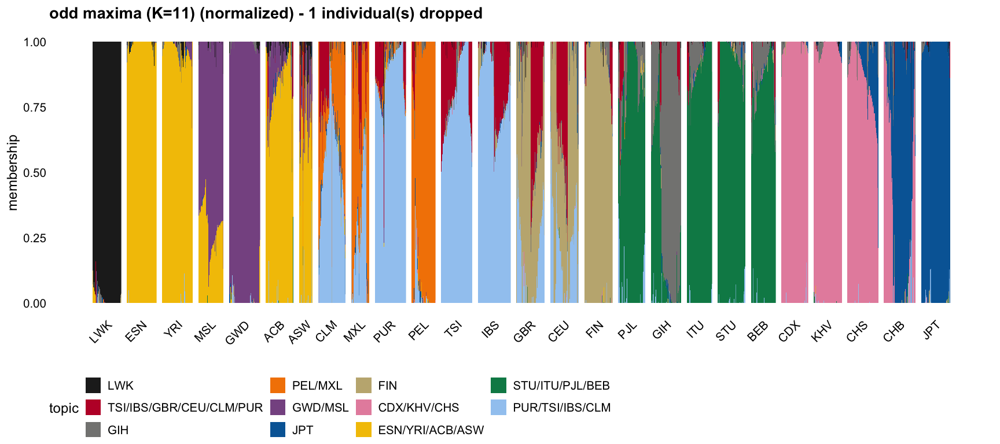
plot_structure("odd maxima (K=11)")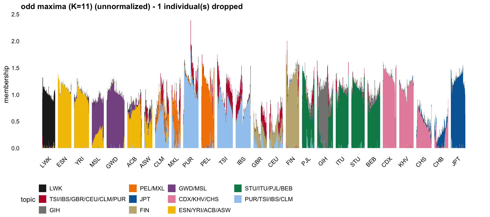
plot_structure("even maxima (K=10)", normalize = TRUE)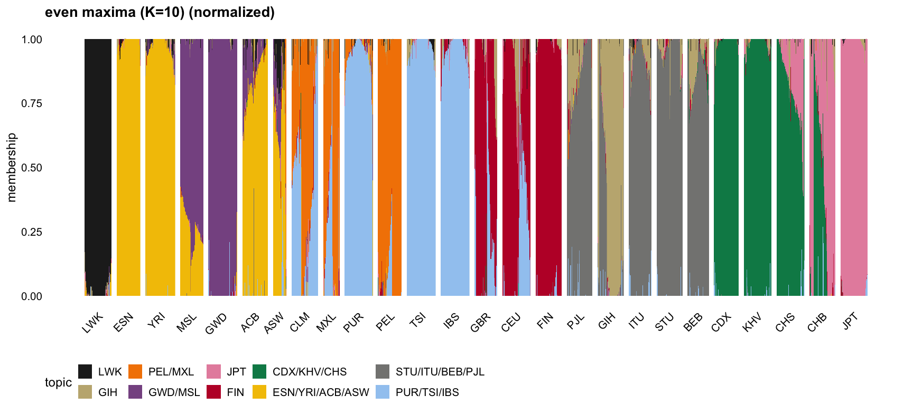
plot_structure("even maxima (K=10)")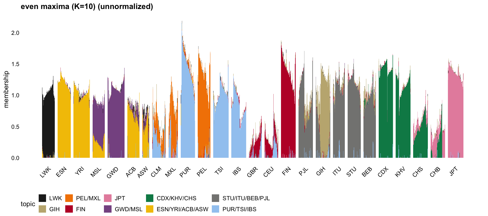
The rank-\(r\) fits fail the \(B \ge 0\) check, but it is worth asking how much of that is down to the factors that do not replicate. Matching the two half fits factor to factor and keeping only the pairs that agree leaves 15 of the 30, with matched correlations from 0.48 to 0.91; the 15 discarded sit at 0.09 and below.
Pruning does help, but not enough: \(B\) below \(-0.01\) falls from 9.8% to 3.4% of entries on the odd half and from 11.7% to 5.0% on the even, against 0.05% or less for the maxima. So the non-replicating factors are part of the problem and not the whole of it — even the replicating rank-\(r\) factors do not give non-negative \(B\) the way the maxima do.
Two further things to note when reading these plots. Restricting to 15 of the 30 factors leaves a fair number of individuals with no positive loading on any retained factor — 47 on the odd half and 17 on the even — and those are dropped, against one individual for the worst of the maxima sets. And the even half has a single bar of height 9.6 against a 99th percentile of 2.2, so the unnormalized plot there is dominated by one individual.
plot_structure("odd K=30 stable", normalize = TRUE)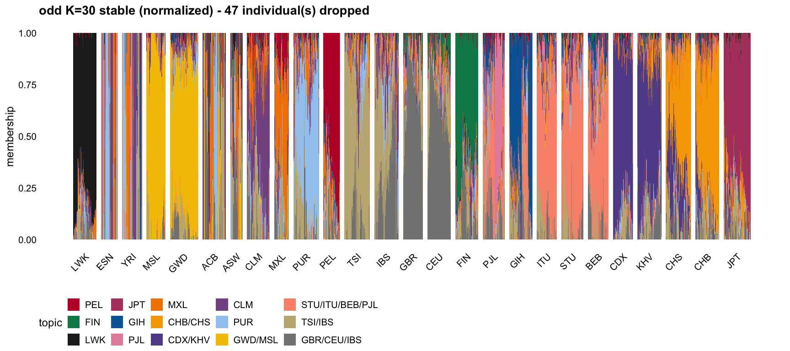
plot_structure("odd K=30 stable")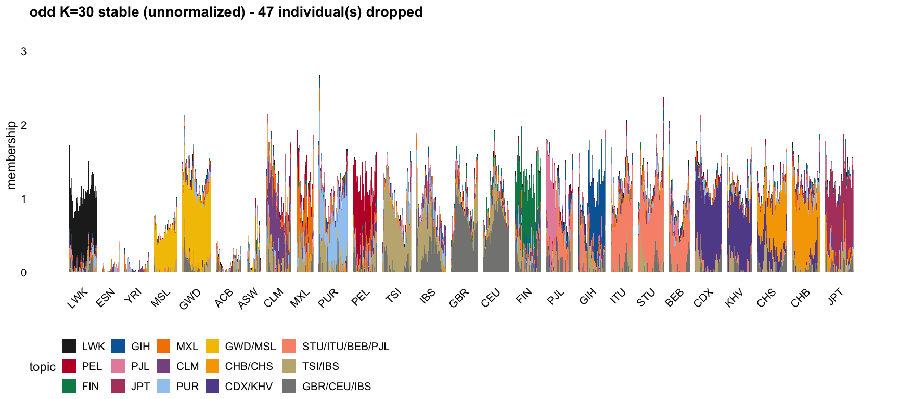
plot_structure("even K=30 stable", normalize = TRUE)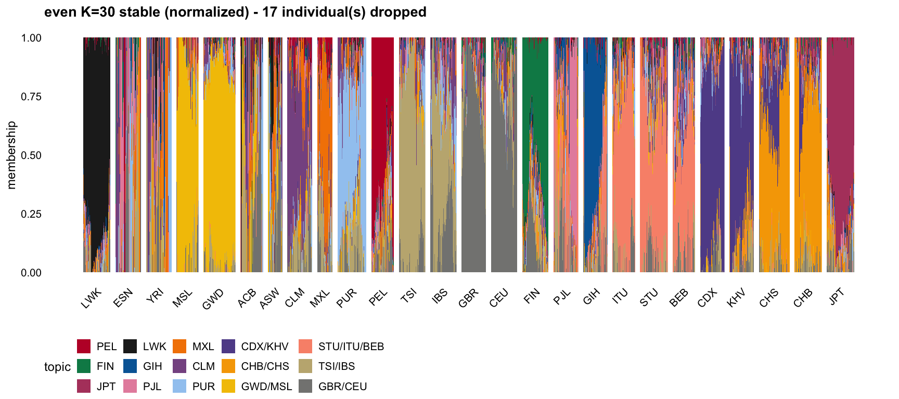
plot_structure("even K=30 stable")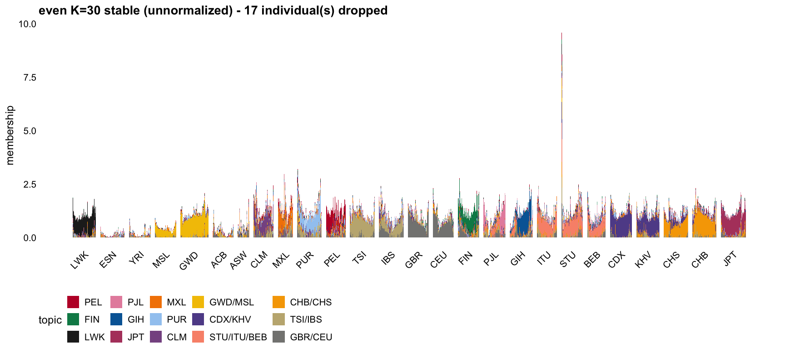
For an external point of reference, here is our 14-factor result recoloured to match an ADMIXTURE-style run on the same data at \(K = 12\), with that run’s \(K = 12\) panel directly below it. The populations are in the same order and the bar widths are proportional to sample size in both, so the two line up.
The colours were read off the \(K = 12\) panel: for each population we took the modal colour of its column, which is the colour of whichever component dominates it. Our factors then take the colour of the component covering the same populations. Where our \(K = 14\) splits something the \(K = 12\) does not, the extra factor gets a darker shade of the same hue rather than a new colour, so the correspondence stays readable:
k12_colors <- c(
"LWK" = "#0048f0", # exact matches to the K = 12 components
"ESN/YRI/ACB/ASW" = "#18f000",
"GWD" = "#f00000",
"PUR" = "#f000d8",
"PEL/MXL" = "#90f000",
"TSI/IBS" = "#a00090", # darker: K = 12 has TSI with PUR/CLM
"GBR/CEU" = "#f06000",
"FIN" = "#f0d800",
"PJL" = "#00c0f0",
"GIH" = "#1800f0",
"STU/ITU/BEB" = "#0080a0", # darker: K = 12 has these with PJL
"CDX/KHV" = "#00f0c0",
"CHB/CHS" = "#6000a0", # darker: K = 12 has CHS with CDX/KHV
"JPT" = "#9000f0")
# The palette is keyed by factor label, so check it lines up with the plot.
m14 <- memberships("pruned maxima (K=14)")
stopifnot(identical(colnames(m14$A), names(k12_colors)))plot_structure("pruned maxima (K=14)", normalize = TRUE,
colors = unname(k12_colors)) +
labs(title = "Ours: 14 maxima, pruned data, recoloured to match K = 12 below")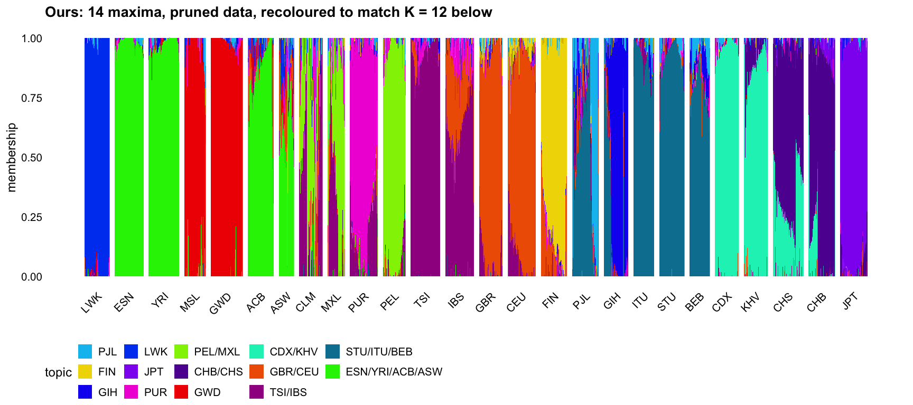
img <- png::readPNG("../data/admixture_k12.png")
grid::grid.newpage()
grid::grid.raster(img)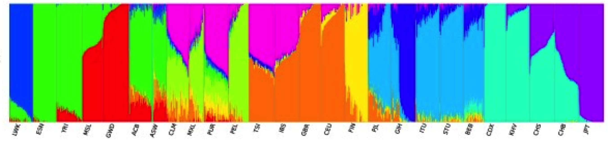
Read together, the two agree on most of the structure and differ in resolution in ways the \(K\) difference predicts. Both give LWK its own component, both put ESN/YRI/ACB/ASW together with ACB and ASW as gradients, both separate MSL/GWD from the other African populations, both give FIN its own component, and both group the four South Asian populations with GIH set apart.
The visible differences are the ones where our extra two factors buy resolution: the \(K = 12\) run puts TSI with CLM and PUR in a single component (magenta) where we split PUR from TSI/IBS, and it groups CHS with CDX/KHV where we split CDX/KHV from CHB/CHS. Our decomposition is also markedly less gradual within populations — their bars vary continuously across individuals within a population, ours are closer to flat — which follows from the \(x|x|\) contrast rewarding one-sided factors.
Each row of \(B\) is a component’s estimated allele frequency profile across the 185,116 SNPs, so the \(K \times K\) correlation matrix of \(B\) says how similar the components are as populations. Focusing on the \(K = 14\) result:
m14 <- memberships("pruned maxima (K=14)")
C <- struct$pruned_maxima$cor_B[m14$o, m14$o]
dimnames(C) <- list(colnames(m14$A), colnames(m14$A))
round(range(C[upper.tri(C)]), 3)[1] 0.598 0.987Every off-diagonal entry is large, between 0.60 and 0.99. That is expected rather than informative on its own: because there is no intercept column, each row of \(B\) is an absolute frequency profile, and all fourteen share the overall allele frequency spectrum of the data. What matters is the pattern in those high values, so the colour scale below spans the observed range rather than starting at zero.
heat <- function(M, title) {
df <- data.frame(
i = factor(rep(rownames(M), ncol(M)), levels = rev(rownames(M))),
j = factor(rep(colnames(M), each = nrow(M)), levels = colnames(M)),
r = as.vector(M))
ggplot(df, aes(j, i, fill = r)) +
geom_tile() +
geom_text(aes(label = sprintf("%.2f", r)), size = 2.1,
colour = ifelse(df$r > mean(range(df$r)), "white", "grey20")) +
scale_fill_viridis_c(limits = range(M), option = "mako", direction = -1) +
labs(x = NULL, y = NULL, fill = "cor", title = title) +
theme_cowplot(font_size = 9) +
theme(axis.text.x = element_text(angle = 90, vjust = 0.5))
}
heat(C, "Correlation of estimated allele frequencies, K = 14")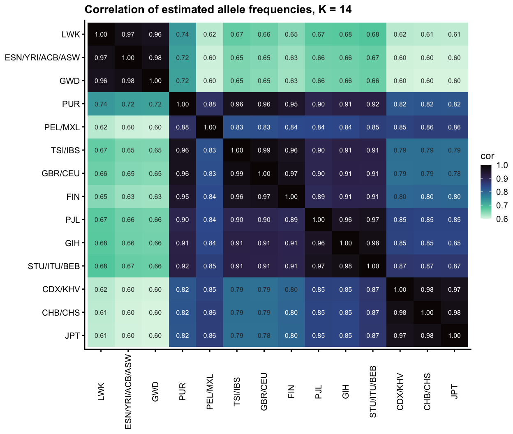
The structure is the expected continental one, in four blocks along the diagonal:
Two features are worth pointing out. Africa being the most differentiated block is what the out-of-Africa history predicts, and it falls out of the correlations without anything being fitted to produce it. And PEL/MXL does not sit cleanly in any block: 0.88 with PUR, 0.83–0.84 with the European components, but 0.85–0.86 with the East Asian ones, which is the signature of Native American ancestry being closer to East Asia than to Europe. It is the only component whose highest correlations are split across two continents.
Reordering by hierarchical clustering on \(1 - r\) rather than by population makes the grouping explicit:
ord <- hclust(as.dist(1 - C), method = "average")$order
heat(C[ord, ord], "Same, ordered by hierarchical clustering")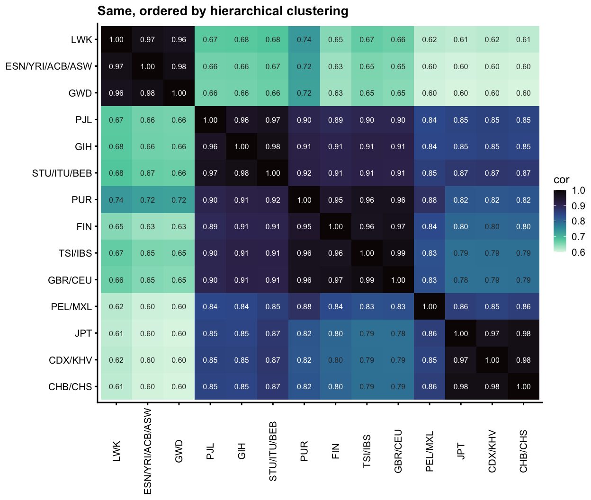
Because all of them share the frequency spectrum, the raw correlations are a weak summary: the interesting variation sits in the third decimal place. It is worth removing the shared component, which is what the next subsection does.
The correlations above are aggregate; a scatter plot of each high-correlation pair shows whether the agreement is uniform across SNPs or whether particular SNPs break it. We take the 14 pairs with \(r > 0.95\), fit a least-squares line to each, and flag SNPs whose standardized residual exceeds 6 in absolute value.
B <- readRDS("../output/tgp_B_pruned_maxima.rds")[m14$o, ]
rownames(B) <- colnames(m14$A)
hi <- which(upper.tri(C) & C > 0.95, arr.ind = TRUE)
pairs_df <- do.call(rbind, lapply(seq_len(nrow(hi)), function(k) {
i <- hi[k, 1]; j <- hi[k, 2]
z <- local({ r <- residuals(lm(B[j, ] ~ B[i, ])); r / sd(r) })
data.frame(pair = sprintf("%s vs %s\n(r = %.3f)", rownames(B)[i],
rownames(B)[j], C[i, j]),
snp = colnames(B), x = B[i, ], y = B[j, ], z = z,
row.names = NULL)
}))
pairs_df$outlier <- abs(pairs_df$z) > 6
# Nearest gene for every SNP, from the UCSC hg19 refGene table via
# code/annotate_snps.R. GRCh37 is the build these data use; the installed
# org.Hs.eg.db is GRCh38 and would be offset by hundreds of kb here.
genes <- readRDS("../output/tgp_snp_genes.rds")
pairs_df$gene <- genes$gene[match(pairs_df$snp, genes$snp)]
pairs_df$dist <- genes$dist[match(pairs_df$snp, genes$snp)]
# Label with the gene, marking those the SNP is not actually inside.
pairs_df$label <- ifelse(pairs_df$dist == 0, pairs_df$gene,
sprintf("%s*", pairs_df$gene))
# Within a panel, several outlier SNPs often sit in the same gene (the LCT
# region contributes 22 points to one panel). Label only the most extreme SNP
# per gene per panel; the region table below keeps the full detail.
pairs_df$label[pairs_df$outlier] <- local({
d <- pairs_df[pairs_df$outlier, ]
keep <- ave(abs(d$z), d$pair, d$gene, FUN = function(z) z == max(z)) == 1
ifelse(keep, d$label, NA_character_)
})
# All flagged points are kept; the bulk is thinned for rendering only.
set.seed(1)
bulk <- pairs_df[!pairs_df$outlier, ]
bulk <- bulk[sample(nrow(bulk), 3e4), ]
plot_df <- rbind(bulk, pairs_df[pairs_df$outlier, ])
c(pairs = nrow(hi), flagged = sum(pairs_df$outlier),
distinct_snps = length(unique(pairs_df$snp[pairs_df$outlier]))) pairs flagged distinct_snps
14 70 48 ggplot(plot_df, aes(x, y)) +
geom_point(data = subset(plot_df, !outlier), size = 0.15, alpha = 0.25,
colour = "grey55") +
geom_point(data = subset(plot_df, outlier), size = 0.9, colour = "#D55E00") +
ggrepel::geom_text_repel(data = subset(plot_df, outlier & !is.na(label)),
aes(label = label), size = 3.7, colour = "#8a3800",
fontface = "italic",
segment.size = 0.2, segment.colour = "grey55",
min.segment.length = 0, max.overlaps = Inf,
box.padding = 0.3, point.padding = 0.2) +
facet_wrap(~ pair, ncol = 4, scales = "free") +
labs(x = "allele frequency, first component",
y = "allele frequency, second component",
caption = "* = nearest gene, SNP not inside it") +
theme_cowplot(font_size = 12) +
theme(strip.text = element_text(size = 11, lineheight = 0.9),
strip.background = element_rect(fill = "grey92", colour = NA))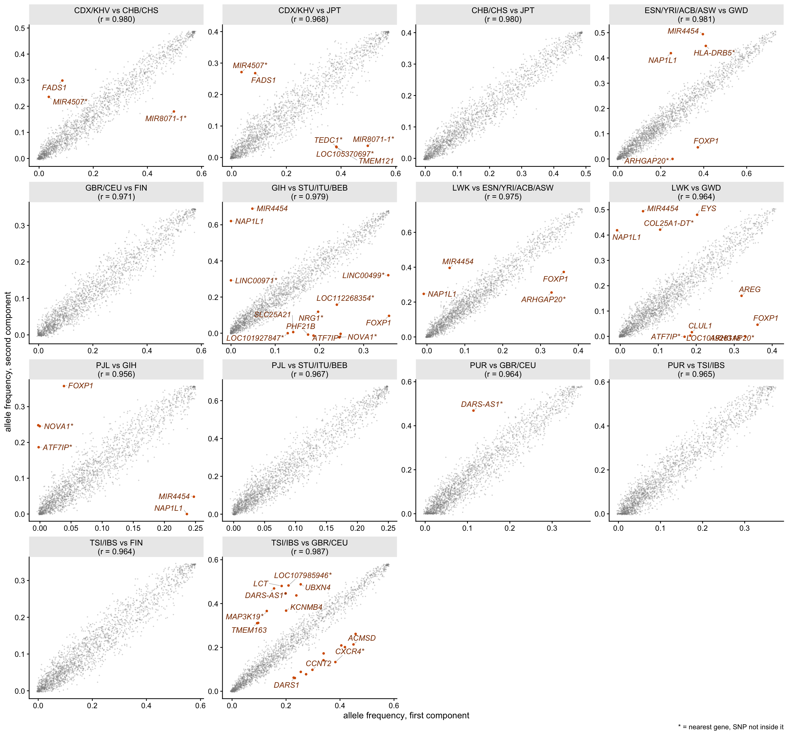
The clouds are tight and essentially linear, so the high correlations are not being produced by a few influential points — but every pair has a small number of clear outliers, and they are not scattered at random. Grouping the flagged SNPs into genomic regions (same chromosome, gaps of at most 1 Mb) shows how concentrated they are:
out <- subset(pairs_df, outlier)
out$chr <- sub(":.*", "", out$snp)
out$pos <- as.numeric(sub(".*:", "", out$snp))
# Assign each distinct SNP to a region.
u <- unique(out[, c("snp", "chr", "pos")])
u <- u[order(u$chr, u$pos), ]
u$region <- cumsum(c(1, (u$chr[-1] != u$chr[-nrow(u)]) |
(diff(u$pos) > 1e6)))
out$region <- u$region[match(out$snp, u$snp)]
region_tab <- do.call(rbind, lapply(split(out, out$region), function(d) {
us <- unique(d[, c("snp", "pos", "gene", "dist")])
data.frame(
`genomic region` = sprintf("chr%s:%.2f-%.2f Mb", d$chr[1],
min(us$pos) / 1e6, max(us$pos) / 1e6),
SNPs = nrow(us),
`max |z|` = round(max(abs(d$z)), 1),
`nearby genes` = paste(head(unique(us$gene[order(us$dist)]), 5),
collapse = ", "),
`pair comparisons` = paste(unique(sub("\\s*\\(r *=.*", "", d$pair)),
collapse = "; "),
check.names = FALSE, stringsAsFactors = FALSE)
}))
region_tab <- region_tab[order(-region_tab$SNPs, -region_tab$`max |z|`), ]
knitr::kable(region_tab, row.names = FALSE)| genomic region | SNPs | max |z| | nearby genes | pair comparisons |
|---|---|---|---|---|
| chr2:135.29-136.97 Mb | 21 | 11.4 | TMEM163, ACMSD, CCNT2, UBXN4, LCT | PUR vs GBR/CEU; TSI/IBS vs GBR/CEU |
| chr14:105.98-106.26 Mb | 5 | 9.8 | TMEM121, LOC105370697, TEDC1, MIR8071-1, MIR4507 | CDX/KHV vs CHB/CHS; CDX/KHV vs JPT |
| chr12:76.44-76.44 Mb | 1 | 15.8 | NAP1L1 | LWK vs ESN/YRI/ACB/ASW; LWK vs GWD; ESN/YRI/ACB/ASW vs GWD; PJL vs GIH; GIH vs STU/ITU/BEB |
| chr5:40.77-40.77 Mb | 1 | 15.3 | MIR4454 | LWK vs ESN/YRI/ACB/ASW; LWK vs GWD; ESN/YRI/ACB/ASW vs GWD; PJL vs GIH; GIH vs STU/ITU/BEB |
| chr3:71.16-71.16 Mb | 1 | 14.6 | FOXP1 | LWK vs ESN/YRI/ACB/ASW; LWK vs GWD; ESN/YRI/ACB/ASW vs GWD; PJL vs GIH; GIH vs STU/ITU/BEB |
| chr14:26.34-26.34 Mb | 1 | 12.4 | NOVA1 | PJL vs GIH; GIH vs STU/ITU/BEB |
| chr5:34.69-34.69 Mb | 1 | 12.0 | MIR4454 | PJL vs GIH; GIH vs STU/ITU/BEB |
| chr11:110.66-110.66 Mb | 1 | 11.7 | ARHGAP20 | LWK vs ESN/YRI/ACB/ASW; LWK vs GWD; ESN/YRI/ACB/ASW vs GWD |
| chr12:14.49-14.49 Mb | 1 | 9.4 | ATF7IP | LWK vs GWD; PJL vs GIH; GIH vs STU/ITU/BEB |
| chr4:139.45-139.45 Mb | 1 | 8.8 | LINC00499 | GIH vs STU/ITU/BEB |
| chr22:45.33-45.33 Mb | 1 | 8.6 | PHF21B | GIH vs STU/ITU/BEB |
| chr4:110.27-110.27 Mb | 1 | 8.6 | COL25A1-DT | LWK vs GWD |
| chr19:55.31-55.31 Mb | 1 | 7.5 | LOC112268354 | GIH vs STU/ITU/BEB |
| chr11:61.57-61.57 Mb | 1 | 7.4 | FADS1 | CDX/KHV vs CHB/CHS; CDX/KHV vs JPT |
| chr3:84.59-84.59 Mb | 1 | 7.4 | LINC00971 | GIH vs STU/ITU/BEB |
| chr6:64.96-64.96 Mb | 1 | 6.9 | EYS | LWK vs GWD |
| chr14:37.60-37.60 Mb | 1 | 6.7 | SLC25A21 | GIH vs STU/ITU/BEB |
| chr6:32.46-32.46 Mb | 1 | 6.7 | HLA-DRB5 | ESN/YRI/ACB/ASW vs GWD |
| chr4:75.48-75.48 Mb | 1 | 6.6 | AREG | LWK vs GWD |
| chr1:95.64-95.64 Mb | 1 | 6.5 | LOC101928118 | LWK vs GWD |
| chr8:31.45-31.45 Mb | 1 | 6.5 | NRG1 | GIH vs STU/ITU/BEB |
| chr18:0.61-0.61 Mb | 1 | 6.3 | CLUL1 | LWK vs GWD |
| chr9:92.73-92.73 Mb | 1 | 6.3 | LOC101927847 | GIH vs STU/ITU/BEB |
| chr12:70.77-70.77 Mb | 1 | 6.1 | KCNMB4 | TSI/IBS vs GBR/CEU |
24 regions hold the 48 outlier SNPs, and two of them dominate.
chr2:135.29–136.97 Mb contains 21 of the 48, all from the two European comparisons (PUR vs GBR/CEU and TSI/IBS vs GBR/CEU). The gene labels spread across the region rather than pointing at one gene, but LCT and its immediate neighbours UBXN4, DARS1 and DARS-AS1 are among them. This is the lactase persistence locus, one of the strongest selective sweeps known in humans, and exactly the sort of site whose allele frequency differs sharply between European and non-European populations while the rest of the genome does not. The sweep haplotype is long, which fits outliers spreading over more than a megabyte into the flanking genes. Only two of the 21 SNPs are inside LCT itself, so the locus is identified here by position rather than by the labels.
chr14:105.98–106.26 Mb holds five, from the two East Asian comparisons. The nearest annotated features are microRNAs at 18–62 kb; this is the immunoglobulin heavy chain region, structurally complex and a common source of mapping artifacts, so that cluster is more likely technical than selective.
The remaining 22 regions are single SNPs, but three of them recur in five different pairs each — NAP1L1 (chr12), FOXP1 (chr3) and MIR4454 (chr5). Each appears in all three African comparisons and in two South Asian ones, so these are SNPs that break the agreement between closely related components in more than one part of the world. HLA-DRB5 appears as a second classic high-differentiation locus, in the ESN/YRI vs GWD comparison.
Selection acts on haplotypes, so a sweep should perturb a run of nearby markers, not one in isolation. That makes the isolated single-SNP outliers suspicious. The obvious objection is that these data are LD-thinned, so a real signal might survive at only one marker — but the thinning is not nearly that severe:
snp_all <- colnames(B); chr_all <- sub(":.*", "", snp_all)
pos_all <- as.numeric(sub(".*:", "", snp_all))
sp <- unlist(lapply(split(pos_all, chr_all), function(p) diff(sort(p))))
c(median_spacing_kb = round(median(sp) / 1e3, 1),
mean_spacing_kb = round(mean(sp) / 1e3, 1))median_spacing_kb mean_spacing_kb
8.6 15.1 At a median spacing of 8.6 kb a 100 kb window holds about 15 markers, so a sweep has plenty of opportunity to show up more than once. We can therefore ask directly whether each outlier’s neighbours carry any signal in the same pair comparison:
Zmat <- sapply(seq_len(nrow(hi)), function(k)
local({ r <- residuals(lm(B[hi[k, 2], ] ~ B[hi[k, 1], ])); r / sd(r) }))
nb_tab <- do.call(rbind, lapply(seq_len(ncol(Zmat)), function(k) {
w6 <- which(abs(Zmat[, k]) > 6)
if (!length(w6)) return(NULL)
do.call(rbind, lapply(w6, function(i) {
nb <- which(chr_all == chr_all[i] & abs(pos_all - pos_all[i]) <= 1e5 &
seq_along(pos_all) != i)
data.frame(snp = snp_all[i], z = Zmat[i, k], n_nb = length(nb),
max_nb_z = if (length(nb)) max(abs(Zmat[nb, k])) else NA_real_)
}))
}))
c(outliers = nrow(nb_tab),
`with neighbours` = sum(nb_tab$n_nb > 0),
`neighbour |z|>3` = sum(nb_tab$max_nb_z > 3, na.rm = TRUE),
`neighbour |z|>6` = sum(nb_tab$max_nb_z > 6, na.rm = TRUE)) outliers with neighbours neighbour |z|>3 neighbour |z|>6
70 70 35 25 nb_tab$gene <- genes$gene[match(nb_tab$snp, genes$snp)]
iso <- subset(nb_tab, max_nb_z < 3)
head(iso[order(-abs(iso$z)), c("snp", "gene", "z", "n_nb", "max_nb_z")], 8) snp gene z n_nb max_nb_z
12:764418204 12:76441820 NAP1L1 15.83527 11 2.080480
5:407658624 5:40765862 MIR4454 15.31738 10 2.189975
3:711585784 3:71158578 FOXP1 -14.64397 11 2.891886
12:764418201 12:76441820 NAP1L1 12.51821 11 1.829767
14:263436311 14:26343631 NOVA1 -12.41060 14 1.670528
5:407658621 5:40765862 MIR4454 12.32926 10 1.864840
5:346853331 5:34685333 MIR4454 -12.02691 19 1.778017
11:1106642321 11:110664232 ARHGAP20 -11.70153 23 2.268906Every outlier has neighbours, but only half of them have a neighbour reaching even \(|z| > 3\). And the pattern is the wrong way round for selection: the most extreme outliers are the most isolated. NAP1L1 reaches \(z = 15.8\) with eleven neighbours whose largest \(|z|\) is 2.1; ARHGAP20 reaches \(-11.7\) with twenty-three neighbours all below 2.3. No haplotype-level process produces a fifteen-sigma deviation at one marker while two dozen markers around it show nothing. These are the same SNPs that recur across five pair comparisons each, which fits the same reading — a bad marker is bad in every comparison it enters.
So the useful division is not “clustered versus single” but that the two clusters (LCT, IGH) behave like genomic signals and the isolated singletons behave like marker-level failures.
Several mechanisms produce a frequency error at one SNP that differs between populations, which is what it takes to move a single point off a pairwise line:
MIR4454 appears twice in the outlier list at two different positions (chr5:34.7 Mb and chr5:40.8 Mb), which is what a multiply-mapping annotation looks like. NAP1L1 is worth checking on the same grounds, since genes with processed pseudogenes elsewhere in the genome are classic mis-mapping targets.One mechanism that is not a likely explanation here is ancestral allele misassignment, even though the matrix was re-coded to derived allele counts. A wrong ancestral call flips \(p \to 1-p\) for every component at that SNP, which moves the point to a line parallel to the fitted one — so mis-polarized SNPs would deviate in a consistent direction by a similar amount, whereas the observed outliers scatter on both sides with a wide range of residuals.
Distinguishing among the remaining mechanisms is not possible from the genotype matrix alone. It would need the per-SNP quality information that was discarded in building this dataset: read depth, mapping quality, VQSR score, Hardy-Weinberg departure computed within population, and overlap with segmental duplication and CNV tracks. A cheap partial check would be to intersect the isolated outliers with a segmental duplication track, which would test the mis-mapping hypothesis directly.
The neighbour test gives a way to rank the loci rather than just split them in two. Widening the window to 500 kb and counting how many nearby markers are also perturbed in the same comparison:
nb_wide <- do.call(rbind, lapply(seq_len(ncol(Zmat)), function(k) {
w6 <- which(abs(Zmat[, k]) > 6)
if (!length(w6)) return(NULL)
do.call(rbind, lapply(w6, function(i) {
n1 <- which(chr_all == chr_all[i] & abs(pos_all - pos_all[i]) <= 1e5 &
seq_along(pos_all) != i)
n5 <- which(chr_all == chr_all[i] & abs(pos_all - pos_all[i]) <= 5e5 &
seq_along(pos_all) != i)
data.frame(pair = sub("\\s*\\(r *=.*", "",
sprintf("%s vs %s", rownames(B)[hi[k, 1]],
rownames(B)[hi[k, 2]])),
snp = snp_all[i], gene = genes$gene[match(snp_all[i], genes$snp)],
z = round(Zmat[i, k], 1), n_100kb = length(n1),
max_nb_z = round(max(abs(Zmat[n1, k])), 1),
nb_gt3_500kb = sum(abs(Zmat[n5, k]) > 3),
nb_gt6_500kb = sum(abs(Zmat[n5, k]) > 6))
}))
}))
in_cluster <- (nb_wide$snp %in% snp_all[chr_all == "2" &
pos_all > 1.35e8 & pos_all < 1.37e8]) |
(nb_wide$snp %in% snp_all[chr_all == "14" &
pos_all > 1.05e8 & pos_all < 1.07e8])
out <- nb_wide[!in_cluster, ]
head(out[order(-out$nb_gt3_500kb, -out$max_nb_z), ], 8) pair snp gene z n_100kb
6:32455859 ESN/YRI/ACB/ASW vs GWD 6:32455859 HLA-DRB5 6.7 56
11:615698301 CDX/KHV vs JPT 11:61569830 FADS1 6.6 13
11:61569830 CDX/KHV vs CHB/CHS 11:61569830 FADS1 7.4 13
12:70765494 TSI/IBS vs GBR/CEU 12:70765494 KCNMB4 6.1 24
11:110664232 LWK vs ESN/YRI/ACB/ASW 11:110664232 ARHGAP20 -7.9 23
14:263436311 GIH vs STU/ITU/BEB 14:26343631 NOVA1 -12.4 14
14:26343631 PJL vs GIH 14:26343631 NOVA1 8.0 14
4:110274473 LWK vs GWD 4:110274473 COL25A1-DT 8.6 11
max_nb_z nb_gt3_500kb nb_gt6_500kb
6:32455859 5.9 44 0
11:615698301 4.9 6 0
11:61569830 5.4 5 0
12:70765494 5.4 3 0
11:110664232 3.5 3 0
14:263436311 1.7 2 0
14:26343631 3.1 1 0
4:110274473 2.8 1 0HLA is the strongest candidate after LCT, and the region table above understates it. That table grouped SNPs passing \(|z| > 6\), and the MHC contributes only one such SNP — but it has 56 markers within 100 kb, of which the most extreme reaches \(|z| = 5.9\), and 44 markers within 500 kb exceed \(|z| > 3\). That is more perturbed neighbours than the LCT region averages (22.5). A broad shoulder of moderately deviating markers with few extreme ones is what long-standing balancing selection should look like, as opposed to the tall narrow peak of a recent sweep, so the MHC being invisible to a hard \(|z| > 6\) cut is a property of the statistic rather than of the locus.
FADS1 also has genuine neighbour support — 13 markers within 100 kb with a maximum neighbour of \(|z| \approx 5\), and five or six above \(|z| > 3\) in each of the two East Asian comparisons. It is therefore a useful counterexample to a blanket “isolated SNP means artifact” rule: it is a documented selection locus that contributes only one marker above the threshold while still showing a real regional shoulder.
KCNMB4 is marginal — 24 neighbours, the best at \(|z| = 5.4\), but only three above 3, and no published selection result I can point to. I would not push it.
Everything below that is isolated, and FOXP1 is the clearest case for treating these as technical: \(z = -14.6\) with zero neighbours above \(|z| > 3\) anywhere within 500 kb.
c(`non-cluster outliers` = sum(!in_cluster),
`with any neighbour |z|>6 within 500kb` = sum(out$nb_gt6_500kb > 0),
`LCT region, mean such neighbours` =
round(mean(nb_wide$nb_gt6_500kb[in_cluster & sub(":.*", "", nb_wide$snp) == "2"]), 1),
`IGH region, mean such neighbours` =
round(mean(nb_wide$nb_gt6_500kb[in_cluster & sub(":.*", "", nb_wide$snp) == "14"]), 1)) non-cluster outliers with any neighbour |z|>6 within 500kb
41.0 0.0
LCT region, mean such neighbours IGH region, mean such neighbours
9.1 3.1 Not one of the 41 non-cluster outliers has a neighbour reaching \(|z| > 6\) within 500 kb, against an average of 9.1 in the LCT region. On this evidence the ordering is LCT first by a wide margin, then HLA, then FADS1, with everything else either technical or unresolved.
Three of these regions match well-established selection signals, and in each case the direction in our data is consistent with the published account. To check that, we put the rows of \(B\) on a comparable scale (dividing each by its mean, since the row scale is not identified) and look at the relative frequency by component:
Bn <- B / rowMeans(B)
freq_at <- function(snp) round(sort(Bn[, snp], decreasing = TRUE), 2)
freq_at("2:136570613") # LCT PJL GIH PEL/MXL STU/ITU/BEB JPT
1.45 1.32 1.18 1.04 0.83
PUR ESN/YRI/ACB/ASW LWK GWD TSI/IBS
0.78 0.76 0.74 0.71 0.68
CDX/KHV FIN CHB/CHS GBR/CEU
0.67 0.50 0.41 0.13 freq_at("11:61569830") # FADS1 / rs174546 GWD ESN/YRI/ACB/ASW LWK GIH PJL
3.31 3.30 3.28 2.77 2.76
STU/ITU/BEB TSI/IBS JPT GBR/CEU CHB/CHS
2.53 2.20 1.97 1.85 1.80
FIN PUR PEL/MXL CDX/KHV
1.50 1.31 0.48 0.44 LCT / MCM6 (chr2:135.3–137.0 Mb). Lactase persistence is the textbook example of a recent strong sweep in Europeans, with an unusually long haplotype around the MCM6 regulatory variant (Bersaglieri et al. 2004; independent persistence alleles arose in African pastoralists, Tishkoff et al. 2007), and LCT is consistently among the top hits of genome-wide scans such as Sabeti et al. 2007. Our data reproduce three features of that account. The outliers are confined to the two comparisons involving GBR/CEU, which is the extreme component at these SNPs; there is a north-south gradient across the European components (GBR/CEU 0.13, FIN 0.50, TSI/IBS 0.68 at 2:136570613), matching the well-documented cline in lactase persistence frequency; and the signal spreads over more than a megabyte into the flanking genes, as a long sweep haplotype should in an LD-thinned marker set.
FADS1 (chr11:61.57 Mb). The FADS1/FADS2 fatty acid desaturase cluster carries selection signals reported in several populations — among the strongest signals in ancient European DNA (Mathieson et al. 2015), in Greenlandic Inuit (Fumagalli et al. 2015), and in South Asian populations with long vegetarian dietary histories. 11:61569830 is rs174546, a known FADS1 regulatory variant. Here it appears as an outlier specifically in the two comparisons involving CDX/KHV, which sits at 0.44 against 1.80 for CHB/CHS and 1.97 for JPT — a four-fold difference within East Asia — while the African components are at 3.3. A locus with this much frequency structure between closely related populations is exactly what breaks a pairwise correlation.
HLA (chr6:32.46 Mb, HLA-DRB5). The MHC is the classic target of balancing selection and one of the most polymorphic and differentiated regions in the genome, so its appearance here is unsurprising. Our outlier comes from the ESN/YRI vs GWD comparison, i.e. it distinguishes West African components from each other.
The chr14:106 Mb cluster is a different matter: that is the immunoglobulin heavy chain locus, which is structurally complex and segmentally duplicated. Signals there are more plausibly mapping artifacts than selection, and I would not treat those five SNPs as biology without independent checking.
For the remaining twenty-odd single-SNP regions I could not match anything to a published selection result with confidence, and I have not invented attributions for them. One point worth flagging to avoid a natural confusion: the FOXP1 hit on chromosome 3 is not FOXP2, the chromosome 7 gene associated with the well-known selection and language literature. Note also that this cross-reference is from background knowledge rather than a systematic lookup; doing it properly would mean intersecting these regions with a catalogue of published selection-scan results, which would also give a null expectation for how many matches to expect by chance.
One more is worth naming on its own. 11:61569830 is an outlier in two pairs and sits inside FADS1; it is rs174546, the same SNP Annie Xie’s GBCD analysis of these data picked out as a large-effect marker, reached here by a completely different route.
So the answer to the question is: no, the high correlations are not driven by outliers, and the outliers that do exist are mostly real biology at two or three well-known loci rather than a problem with the decomposition.
If the 14 factors capture the population structure, the residual \(E = X - AB\) should be close to noise. It is not.
The residual is \(2464 \times 185116\) and never needs to be formed: \(EE' = G_X - MA' - AM' + A(BB')A'\) with \(M = XB'\), all of which are available or cheap. code/fit_tgp_residual.R builds that, centres it, whitens to 30 dimensions, and runs the same rank-1 search as before — 1000 independent random starts, 500 iterations, clustered at the same threshold.
res <- readRDS("../output/tgp_residual.rds")
pop_r <- meta$pop[match(res$ids, meta$sample)]
c(residual_ss_fraction = round(res$ss_ratio, 3))residual_ss_fraction
0.32 round(res$d[1:12]) [1] 4391 1126 420 406 321 309 308 305 304 303 302 301The residual holds 32% of the sum of squares, and its spectrum is not flat: two very large singular values, then 420, 406, 321, and only then the noise plateau near 300. So several strong directions survive the fit.
Lr <- res$L
w <- pmax(Lr, 0)^2
o <- order(colSums(w * as.integer(pop_r)) / colSums(w))
Lr <- Lr[, o, drop = FALSE]
sz <- res$size[o]
colnames(Lr) <- make.unique(apply(Lr, 2, function(x) {
v <- tapply(x, pop_r, mean); v <- sort(v[v > 0], decreasing = TRUE)
paste(names(v)[v >= 0.3 * v[1]], collapse = "/") }))
data.frame(factor = colnames(Lr), basin = sz,
skewness = round(apply(Lr, 2, function(x)
mean(x^3) / mean(x^2)^1.5), 1),
`n > 2` = colSums(Lr > 2),
max = round(apply(Lr, 2, max), 1),
check.names = FALSE, row.names = NULL) factor basin skewness n > 2 max
1 MSL/ASW/ACB 121 3.0 99 5.7
2 MXL/ITU/CLM/ESN/CEU/PJL/YRI/CHS/IBS 112 14.4 5 26.3
3 MXL/ESN/CEU/CLM/IBS/STU 1 12.7 7 24.7
4 CLM/MXL 537 3.2 112 6.5
5 PJL 31 3.3 84 8.8
6 STU/MXL/ASW/CLM 198 15.4 8 27.0Six maxima, and they are of the two kinds seen throughout this work. Three are population-level (skewness around 3, with 84–112 individuals loading above 2): one on MSL, one on CLM, and a second PJL direction. Three are the familiar individual-level kind (skewness 13–15, fewer than 10 individuals), picking out the LWK pair NA19331/NA19334 and the STU pair HG03750/HG03754 — relatives that survived the earlier pruning, because that pruning was decided on the full-data pool before these fits existed.
plot_resid <- function(L) {
ord <- order(pop_r); nf <- ncol(L)
df <- data.frame(idx = rep(seq_len(nrow(L)), nf),
loading = as.vector(L[ord, ]),
sp = rep(meta$super_pop[match(res$ids, meta$sample)][ord], nf),
factor = factor(rep(colnames(L), each = nrow(L)),
levels = colnames(L)))
brk <- tapply(seq_along(ord), pop_r[ord], mean)
ggplot(df, aes(idx, loading, colour = sp)) +
geom_hline(yintercept = 0, linewidth = 0.2, colour = "grey50") +
geom_point(size = 0.3, alpha = 0.7) +
facet_wrap(~ factor, ncol = 3, scales = "free_y") +
scale_x_continuous(breaks = brk, labels = names(brk)) +
scale_colour_manual(values = sp_palette) +
labs(x = NULL, y = "loading", colour = "super-population") +
theme_cowplot(font_size = 9) +
theme(axis.text.x = element_text(angle = 90, vjust = 0.5, size = 5),
legend.position = "bottom") +
guides(colour = guide_legend(override.aes = list(size = 3, alpha = 1),
nrow = 1))
}
plot_resid(Lr)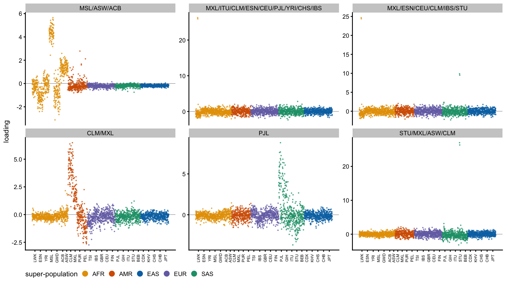
Fitting with \(A = \max(L,0)\) discards the negative part of every source, so some residual structure is guaranteed. The question is whether these six directions are inside the span of the 14 sources — in which case they are an artifact of the non-negative approximation — or outside it, in which case the source set itself is incomplete.
L14 <- fit$maxima$no_sparse$L
data.frame(factor = colnames(Lr),
R2_on_span = round(sapply(seq_len(ncol(Lr)), function(j)
summary(lm(Lr[, j] ~ L14))$r.squared), 3),
row.names = NULL) factor R2_on_span
1 MSL/ASW/ACB 0.370
2 MXL/ITU/CLM/ESN/CEU/PJL/YRI/CHS/IBS 0.001
3 MXL/ESN/CEU/CLM/IBS/STU 0.002
4 CLM/MXL 0.272
5 PJL 0.046
6 STU/MXL/ASW/CLM 0.016They are mostly outside it: 0.001–0.05 for four of the six, and only 0.27 and 0.37 for the CLM and MSL directions. A cleaner version of the same test asks how well the 14 sources can represent a population at all, by regressing a pure population indicator on their span:
sapply(c("LWK", "GWD", "MSL", "CLM", "PJL"), function(pp)
round(summary(lm(as.numeric(pop_r == pp) ~ L14))$r.squared, 3)) LWK GWD MSL CLM PJL
0.962 0.895 0.349 0.235 0.380 That settles it. LWK and GWD, which have their own factors among the 14, are represented almost perfectly (0.96 and 0.90). MSL and CLM are not (0.35 and 0.24) — and MSL and CLM are precisely the two populations the residual search recovers. They are real populations with no factor of their own in the \(K = 14\) solution, so the structure in the residual is genuinely missing from the sources rather than lost in the non-negative step.
The practical reading is that \(K = 14\) is too small for these data even though it is what the rank-1 search converges on: the maxima it finds are real, but they do not exhaust the population structure. MSL and CLM are visible in the \(K = 20\) and \(K = 30\) rank-\(r\) fits of the earlier analysis, where they appear as ordinary population factors — and MSL was one of the factors there that dissolved when the orthogonality constraint was lifted. Taken together, these are populations the \(x|x|\) objective does not make a local maximum of, but which are nonetheless present in the data.
The correlation matrix of the \(K = 14\) components can be read as a sum of contributions from shared ancestry. Model it as \[ C \approx \sum_k d_k\, t_k t_k' + E, \qquad t_k \in \{0,1\}^{14},\ d_k \ge 0, \] so each binary vector picks a subset \(S_k\) of components and adds \(d_k\) to the correlation of every pair inside it. With \(K = 14\) we can simply enumerate all \(2^{14}\) subsets and let an \(L_1\)-penalized non-negative regression choose a sparse set of them. We fit the off-diagonal entries only, and use the raw correlation matrix with the shared component still in it — the all-ones subset is in the dictionary, so that component is something the model can represent rather than something we have to remove first.
Cm <- struct$pruned_maxima$cor_B[m14$o, m14$o]
dimnames(Cm) <- list(colnames(m14$A), colnames(m14$A))
Kc <- nrow(Cm)
short <- sub("/.*", "", colnames(m14$A)) # short labels for printing
# All subsets with at least two members (a singleton contributes no pairs).
Tm <- sapply(0:(2^Kc - 1), function(x) as.integer(intToBits(x))[1:Kc])
Tm <- Tm[, colSums(Tm) >= 2]
ij <- which(upper.tri(Cm), arr.ind = TRUE)
Xd <- t(sapply(seq_len(nrow(ij)), function(r) Tm[ij[r, 1], ] * Tm[ij[r, 2], ]))
yd <- Cm[upper.tri(Cm)]
c(pairs = length(yd), subsets = ncol(Tm)) pairs subsets
91 16369 glmnet gives the wrong answer on this design. The columns are near-duplicates — the all-ones subset and the fourteen “all but one” subsets agree on at least 78 of the 91 pairs — and its screening rules discard the all-ones column even though that column has the largest \(x'y\) and should enter first. The result is a solution that is not merely a different sparse representation but has a strictly worse objective, so we use a plain active-set coordinate descent instead and check the KKT conditions.
nnlasso <- function(X, y, lam, pf = rep(1, ncol(X)), tol = 1e-10) {
n <- length(y); xx <- colSums(X^2)
b <- numeric(ncol(X)); act <- integer(0); r <- y
for (out in 1:100) {
g <- as.vector(crossprod(X, r)) / n - lam * pf
viol <- setdiff(which(g > tol), act)
if (!length(viol)) break
act <- union(act, viol[order(-g[viol])][1:min(20, length(viol))])
Xa <- X[, act, drop = FALSE]; ba <- b[act]; xa <- xx[act]; pa <- pf[act]
r <- y - Xa %*% ba
for (it in 1:5000) { # CD on the active set
md <- 0
for (jj in seq_along(act)) {
r <- r + Xa[, jj] * ba[jj]
nb <- max(0, sum(Xa[, jj] * r) / n - lam * pa[jj]) / (xa[jj] / n)
md <- max(md, abs(nb - ba[jj])); ba[jj] <- nb
r <- r - Xa[, jj] * nb
}
if (md < 1e-13) break
}
b[act] <- ba; act <- act[b[act] > 0]; r <- as.vector(y - X %*% b)
}
b
}setname <- function(t) paste(short[t == 1], collapse = "+")
lams <- c(0.30, 0.15, 0.08, 0.04, 0.02, 0.01)
fits <- lapply(lams, function(l) nnlasso(Xd, yd, l))
do.call(rbind, lapply(seq_along(lams), function(i) {
b <- fits[[i]]
data.frame(lambda = lams[i], terms = sum(b > 1e-8),
R2 = round(1 - sum((yd - Xd %*% b)^2) / sum(yd^2), 4),
max_KKT = signif(max(as.vector(crossprod(Xd, yd - Xd %*% b)) /
length(yd) - lams[i]), 2))
})) lambda terms R2 max_KKT
1 0.30 1 0.8369 2.2e-16
2 0.15 1 0.9407 2.8e-16
3 0.08 2 0.9744 4.5e-14
4 0.04 2 0.9866 3.8e-14
5 0.02 3 0.9918 3.3e-16
6 0.01 10 0.9948 1.5e-14The KKT residuals are at machine precision throughout, so these are the exact solutions. The sequence in which subsets enter is the interesting part:
for (i in seq_along(lams)) {
b <- fits[[i]]; nz <- which(b > 1e-8)
if (length(nz) > 6) next
cat(sprintf("lambda = %.2f\n", lams[i]))
for (j in nz[order(-b[nz])])
cat(sprintf(" d = %.3f |S| = %2d %s\n", b[j], sum(Tm[, j]),
setname(Tm[, j])))
}lambda = 0.30
d = 0.496 |S| = 14 LWK+ESN+GWD+PUR+PEL+TSI+GBR+FIN+PJL+GIH+STU+CDX+CHB+JPT
lambda = 0.15
d = 0.646 |S| = 14 LWK+ESN+GWD+PUR+PEL+TSI+GBR+FIN+PJL+GIH+STU+CDX+CHB+JPT
lambda = 0.08
d = 0.673 |S| = 14 LWK+ESN+GWD+PUR+PEL+TSI+GBR+FIN+PJL+GIH+STU+CDX+CHB+JPT
d = 0.072 |S| = 11 PUR+PEL+TSI+GBR+FIN+PJL+GIH+STU+CDX+CHB+JPT
lambda = 0.04
d = 0.673 |S| = 14 LWK+ESN+GWD+PUR+PEL+TSI+GBR+FIN+PJL+GIH+STU+CDX+CHB+JPT
d = 0.139 |S| = 11 PUR+PEL+TSI+GBR+FIN+PJL+GIH+STU+CDX+CHB+JPT
lambda = 0.02
d = 0.646 |S| = 14 LWK+ESN+GWD+PUR+PEL+TSI+GBR+FIN+PJL+GIH+STU+CDX+CHB+JPT
d = 0.183 |S| = 11 PUR+PEL+TSI+GBR+FIN+PJL+GIH+STU+CDX+CHB+JPT
d = 0.040 |S| = 10 LWK+ESN+GWD+PUR+TSI+GBR+FIN+PJL+GIH+STUThe decomposition is nested and reads as a population history:
The third term the lasso adds is not the obvious one, and that turns out to be a defect of the penalty rather than a feature of the data.
Looking at the heatmap, a three-component model ought to be: a shared component, an African component, and an out-of-Africa component. The lasso instead picks African \(\cup\) European \(\cup\) South Asian as its third subset, which gives African pairs a fitted correlation of only \(0.646 + 0.040 = 0.686\) where the observed values are 0.96–0.98. It is underfitting the African block badly.
The reason is that an \(L_1\) penalty on \(d\) alone does not account for how many pairs a subset touches. The African subset covers 3 of the 91 pairs and needs \(d \approx 0.33\) to fit them, costing 0.33 in penalty; a subset of size 10 covers 45 pairs and buys a comparable reduction in squared error for a cost of 0.09. Small-but-strong blocks are therefore systematically passed over. Fitting the two candidate three-term models by unpenalized non-negative least squares shows the cost:
nnls_cols <- function(cols, iters = 3000) {
Xa <- X_sub[, cols, drop = FALSE]; b <- numeric(length(cols))
r <- yd; xx <- colSums(Xa^2)
for (it in 1:iters) {
md <- 0
for (j in seq_along(cols)) {
r <- r + Xa[, j] * b[j]
nb <- max(0, sum(Xa[, j] * r) / xx[j])
md <- max(md, abs(nb - b[j])); b[j] <- nb
r <- r - Xa[, j] * nb
}
if (md < 1e-13) break
}
list(b = b, sse = sum((yd - Xa %*% b)^2))
}
X_sub <- Xd
idx_of <- function(v) which(apply(Tm, 2, function(t) all(t == v)))
i_all <- idx_of(rep(1, Kc))
i_afr <- idx_of(c(1, 1, 1, rep(0, Kc - 3)))
i_ooa <- idx_of(c(0, 0, 0, rep(1, Kc - 3)))
i_lasso3 <- idx_of(c(1,1,1,1,0,1,1,1,1,1,1,0,0,0))
sapply(list(`lasso: all + nonAFR + (AFR,EUR,SAS)` = c(i_all, i_ooa, i_lasso3),
`all + AFR + out-of-Africa` = c(i_all, i_afr, i_ooa)),
function(cl) round(1 - nnls_cols(cl)$sse / sum(yd^2), 4))lasso: all + nonAFR + (AFR,EUR,SAS) all + AFR + out-of-Africa
0.9938 0.9957 The proposed model fits better with the same number of terms. And unpenalized greedy forward selection — which has no size bias, since it just asks which single subset most reduces the squared error — picks it out directly:
sel <- integer(0)
for (step in 1:3) {
sse <- sapply(seq_len(ncol(Xd)),
function(j) if (j %in% sel) Inf else nnls_cols(c(sel, j))$sse)
sel <- c(sel, which.min(sse))
cat(sprintf("step %d: add %-30s R2 = %.4f\n", step, setname(Tm[, sel[step]]),
1 - nnls_cols(sel)$sse / sum(yd^2)))
}step 1: add LWK+ESN+GWD+PUR+PEL+TSI+GBR+FIN+PJL+GIH+STU+CDX+CHB+JPT R2 = 0.9753
step 2: add PUR+PEL+TSI+GBR+FIN+PJL+GIH+STU+CDX+CHB+JPT R2 = 0.9907
step 3: add LWK+ESN+GWD R2 = 0.9957So the interpretable three-component model is the one the eye picks off the heatmap: a shared component (\(d = 0.645\)), an African component (\(d = 0.328\) on LWK, ESN/YRI/ACB/ASW, GWD) and an out-of-Africa component (\(d = 0.232\) on the other eleven), reaching \(R^2 = 0.996\) on the off-diagonals. That a greedy search over all 16,369 subsets recovers exactly this, in this order and with no tree structure imposed, is good evidence that the \(x|x|\) components carry real ancestry information.
The natural remedy is to put the columns on an equal footing before penalizing. Since the columns are 0/1, scaling each to unit \(L_2\) norm is the same as a penalty factor of \(\sqrt{\#\text{pairs}}\), half way between the uniform penalty above and a per-pair one. All three were tried, with the same solver:
| column scaling | penalty \(\propto\) | behaviour |
|---|---|---|
| none | \(1\) | African subset never enters in the sparse regime |
| unit \(L_2\) norm | \(\sqrt{\#\text{pairs}}\) | African enters 4th, at \(\lambda = 0.005\) |
| per pair | \(\#\text{pairs}\) | floods: 105 terms at the largest \(\lambda\) tried |
pf <- sqrt(colSums(Xd)) # = ||x_j||_2, i.e. unit-L2 columns
fit2 <- lapply(c(0.010, 0.008, 0.005), function(l) nnlasso(Xd, yd, l, pf = pf))
for (i in seq_along(fit2)) {
b <- fit2[[i]]; nz <- which(b > 1e-8)
cat(sprintf("lambda = %.3f terms = %d R2 = %.4f : %s\n",
c(0.010, 0.008, 0.005)[i], length(nz),
1 - sum((yd - Xd %*% b)^2) / sum(yd^2),
paste(sapply(nz[order(-b[nz])], function(j) setname(Tm[, j])),
collapse = " | ")))
}lambda = 0.010 terms = 2 R2 = 0.9750 : LWK+ESN+GWD+PUR+PEL+TSI+GBR+FIN+PJL+GIH+STU+CDX+CHB+JPT | PUR+PEL+TSI+GBR+FIN+PJL+GIH+STU+CDX+CHB+JPT
lambda = 0.008 terms = 3 R2 = 0.9812 : LWK+ESN+GWD+PUR+PEL+TSI+GBR+FIN+PJL+GIH+STU+CDX+CHB+JPT | PUR+PEL+TSI+GBR+FIN+PJL+GIH+STU+CDX+CHB+JPT | LWK+ESN+GWD+PUR+TSI+GBR+FIN+PJL+GIH+STU
lambda = 0.005 terms = 4 R2 = 0.9903 : LWK+ESN+GWD+PUR+PEL+TSI+GBR+FIN+PJL+GIH+STU+CDX+CHB+JPT | PUR+PEL+TSI+GBR+FIN+PJL+GIH+STU+CDX+CHB+JPT | LWK+ESN+GWD | LWK+ESN+GWD+PUR+TSI+GBR+FIN+PJL+GIH+STUNormalizing helps — the African block enters the solution at all, which it never does under a uniform penalty — but it still arrives fourth, behind the same size-10 subset, and the four-term fit (\(R^2 = 0.990\)) is worse than the greedy three-term one. The size bias is reduced, not removed: even with equal column norms, a subset covering 45 pairs still has 15 times as many chances to reduce the squared error as one covering 3.
The real problem is that \(L_1\) conflates selection with shrinkage: the penalty that decides which subset enters is the same one that sets how large its coefficient is, and the two want different scalings. susieR separates them. Each single effect picks its column by Bayes factor and estimates the effect size on its own, so there is no size bias, and the near-duplicate columns that defeated glmnet are exactly what its credible sets are designed for.
nrm <- sqrt(colSums(Xd^2))
Xn <- sweep(Xd, 2, nrm, "/") # unit L2 columns
sfit <- susieR::susie(Xn, yd, L = 10, intercept = FALSE, standardize = FALSE)
dhat <- coef(sfit)[-1] / nrm # back to the d scale
c(converged = sfit$converged,
R2 = round(1 - sum((yd - Xd %*% dhat)^2) / sum(yd^2), 4),
all_positive = all(dhat[dhat != 0] > 0)) converged R2 all_positive
1.0000 0.9988 0.0000 cs <- susieR::susie_get_cs(sfit, X = Xn)
do.call(rbind, lapply(seq_along(cs$cs), function(i) {
j <- cs$cs[[i]][which.max(sfit$pip[cs$cs[[i]]])]
data.frame(CS = i, size = length(cs$cs[[i]]),
purity = round(cs$purity[i, "min.abs.corr"], 2),
pip = round(sfit$pip[j], 3), d = round(dhat[j], 3),
`|S|` = sum(Tm[, j]), subset = setname(Tm[, j]),
check.names = FALSE, row.names = NULL)
})) CS size purity pip d |S|
1 1 1 1 1 0.590 14
2 2 1 1 1 0.246 11
3 3 1 1 1 0.295 3
4 4 1 1 1 0.137 3
5 5 1 1 1 0.087 10
subset
1 LWK+ESN+GWD+PUR+PEL+TSI+GBR+FIN+PJL+GIH+STU+CDX+CHB+JPT
2 PUR+PEL+TSI+GBR+FIN+PJL+GIH+STU+CDX+CHB+JPT
3 LWK+ESN+GWD
4 CDX+CHB+JPT
5 LWK+ESN+GWD+PUR+TSI+GBR+FIN+PJL+GIH+STUThis is the decomposition we were after, and it is cleaner than anything the lasso produced. Five credible sets, every one a singleton with purity 1 and PIP 1, reaching \(R^2 = 0.999\):
The implied fitted values check out against the heatmap: African pairs get \(0.59 + 0.30 + 0.09 = 0.97\) against 0.96–0.98 observed, East Asian pairs \(0.59 + 0.25 + 0.14 = 0.97\) against 0.97–0.98, and African-to-East-Asian pairs get the shared term alone, 0.59, against 0.60–0.62 observed.
L is not binding: L = 6, L = 10 and L = 15 all return the same five credible sets with the same subsets and the same \(d\) to three decimals, at identical \(R^2\) and an ELBO agreeing to 128.376 vs 128.377.
sapply(c(6, 10, 15), function(LL) {
fl <- susieR::susie(Xn, yd, L = LL, intercept = FALSE, standardize = FALSE)
dl <- coef(fl)[-1] / nrm
c(L = LL, nCS = length(susieR::susie_get_cs(fl, X = Xn)$cs),
R2 = round(1 - sum((yd - Xd %*% dl)^2) / sum(yd^2), 5),
ELBO = round(susieR::susie_get_objective(fl), 3))
}) [,1] [,2] [,3]
L 6.00000 10.00000 15.00000
nCS 5.00000 5.00000 5.00000
R2 0.99881 0.99881 0.99881
ELBO 128.37600 128.37700 128.37700Two other things worth noting. Every coefficient came out positive without non-negativity being imposed, so the constraint is not binding — the data prefer a non-negative decomposition on their own. And the credible sets are all singletons despite a dictionary in which the top columns correlate above 0.99, which is the case susieR is built for and where both glmnet and the greedy search were on shakier ground.
For a decomposition at this scale susieR is clearly the right tool. Greedy selection gets the first three terms right; the \(L_1\) path is reliable only for the first two.
resid_vec <- as.vector(yd - Xd %*% dhat)
Rm <- matrix(0, Kc, Kc, dimnames = dimnames(Cm))
Rm[upper.tri(Rm)] <- resid_vec
Rm <- Rm + t(Rm)
c(sd = round(sd(resid_vec), 4), min = round(min(resid_vec), 3),
max = round(max(resid_vec), 3)) sd min max
0.0279 -0.0520 0.0630 lim <- max(abs(Rm))
dfR <- data.frame(
i = factor(rep(rownames(Rm), ncol(Rm)), levels = rev(rownames(Rm))),
j = factor(rep(colnames(Rm), each = nrow(Rm)), levels = colnames(Rm)),
r = as.vector(Rm))
ggplot(dfR, aes(j, i, fill = r)) +
geom_tile() +
geom_text(aes(label = ifelse(r == 0, "", sprintf("%+.02f", r))), size = 2.1,
colour = "grey15") +
scale_fill_gradient2(low = "#2166AC", mid = "white", high = "#B2182B",
limits = c(-lim, lim)) +
labs(x = NULL, y = NULL, fill = "residual",
title = "Correlation residuals after the five binary components") +
theme_cowplot(font_size = 9) +
theme(axis.text.x = element_text(angle = 90, vjust = 0.5))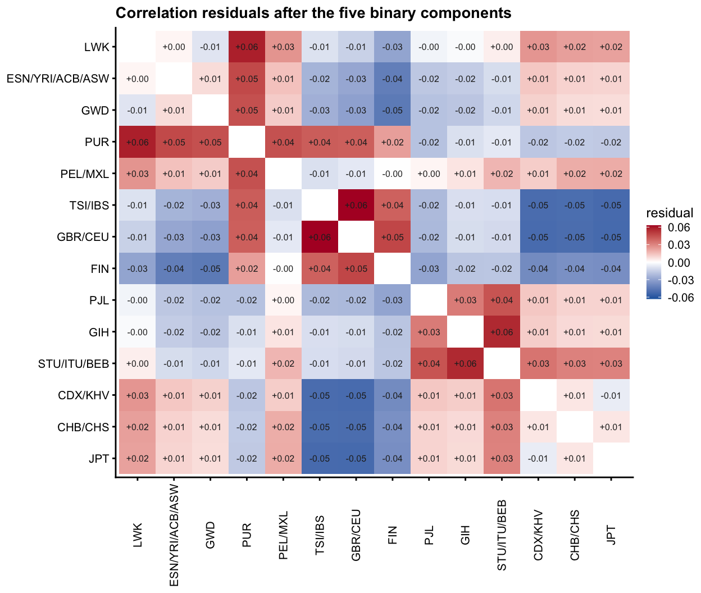
The residuals are an order of magnitude smaller than the correlations themselves — standard deviation about 0.026 against correlations of 0.6 to 0.99 — but they are plainly not noise, and what is left tells us what the five subsets miss.
ord <- order(-abs(resid_vec))[1:8]
data.frame(pair = paste(rownames(Cm)[ij[ord, 1]], "vs", colnames(Cm)[ij[ord, 2]]),
observed = round(yd[ord], 3),
residual = round(resid_vec[ord], 3), row.names = NULL) pair observed residual
1 TSI/IBS vs GBR/CEU 0.987 0.063
2 LWK vs PUR 0.736 0.058
3 GIH vs STU/ITU/BEB 0.979 0.056
4 GBR/CEU vs JPT 0.785 -0.052
5 TSI/IBS vs JPT 0.785 -0.052
6 GBR/CEU vs CDX/KHV 0.785 -0.051
7 TSI/IBS vs CDX/KHV 0.786 -0.051
8 GBR/CEU vs CHB/CHS 0.786 -0.051Three things stand out.
Europe and South Asia have no block of their own. The model gives Africa and East Asia their own subsets but not Europe or South Asia, and the residuals show exactly that gap: TSI/IBS–GBR/CEU is the largest positive residual at +0.063, with GBR/CEU–FIN at +0.048, and on the South Asian side GIH–STU/ITU/BEB at +0.056 and PJL–STU/ITU/BEB at +0.044. Those blocks are under-fitted, and the corresponding European-to-East-Asian entries are over-fitted at about \(-0.05\).
PUR does not fit the subset structure at all. Its entire row is positive against Africa, the Americas and Europe (+0.04 to +0.06) and negative against East Asia. A model built from binary memberships cannot represent a population that is a genuine three-way admixture, so PUR shows up as a uniformly under-predicted row rather than as a missing block.
The structure is nested, not partitioned. A tree would leave residuals without this pattern of matched positive and negative blocks. What the residuals describe is the difference between a strict hierarchy and real population history with gene flow across the branches.
It is worth noting that susieR stopped at five components with L = 15 available, so it judged the European and South Asian blocks not worth adding on 91 data points. The residual plot suggests they are real; with only 91 off-diagonal entries there is simply not much power to establish them.
Individuals with no positive loading on any source in a set have no membership representation and are dropped from that plot: one for the odd maxima, none for the other three maxima sets, but 47 and 17 for the stability-pruned K = 30 sets. Each plot title reports its own count.
\(B \ge 0\) is empirical, not guaranteed. It holds for every maxima set here and fails for every rank-\(r\) fit, so it should be rechecked for any new set of sources rather than assumed.
The \(R^2\) values are against the raw sum of squares of \(X\), which is dominated by the mean. They are not evidence that individual genotypes are well predicted and should not be read as such.
This is not the \(X \approx 2QP\) parameterization with \(Q\) non-negative, rows summing to 1, and \(P\) a matrix of allele frequencies. That version is infeasible on these data. Making \(Q\) non-negative with rows summing to 1 requires a simplex whose vertices sit about 2.9 times further from the baseline than any observed individual, and the implied frequencies at those vertices then run from \(-2.6\) to \(3.9\), with 46% outside \([0,1]\). An enclosing simplex has to extrapolate past the data, and the frequency map is already marginal at the data itself (about 4% of fitted individual frequencies fall outside \([0,1]\)). What is plotted here is the weaker, achievable thing: non-negative memberships on a common scale, with no claim that the rows of \(B\) are population allele frequencies.
sessionInfo()R version 4.4.2 (2024-10-31)
Platform: aarch64-apple-darwin20
Running under: macOS 26.5.2
Matrix products: default
BLAS: /System/Library/Frameworks/Accelerate.framework/Versions/A/Frameworks/vecLib.framework/Versions/A/libBLAS.dylib
LAPACK: /Library/Frameworks/R.framework/Versions/4.4-arm64/Resources/lib/libRlapack.dylib; LAPACK version 3.12.0
locale:
[1] C
time zone: America/Chicago
tzcode source: internal
attached base packages:
[1] stats graphics grDevices utils datasets methods base
other attached packages:
[1] fastTopics_0.7-38 cowplot_1.2.0 ggplot2_4.0.2
loaded via a namespace (and not attached):
[1] tidyselect_1.2.1 viridisLite_0.4.3 dplyr_1.2.0
[4] farver_2.1.2 S7_0.2.1 fastmap_1.2.0
[7] lazyeval_0.2.2 reshape_0.8.10 promises_1.5.0
[10] digest_0.6.39 lifecycle_1.0.5 invgamma_1.2
[13] magrittr_2.0.4 compiler_4.4.2 rlang_1.1.7
[16] sass_0.4.10 progress_1.2.3 tools_4.4.2
[19] yaml_2.3.12 data.table_1.18.2.1 knitr_1.51
[22] prettyunits_1.2.0 labeling_0.4.3 htmlwidgets_1.6.4
[25] scatterplot3d_0.3-44 plyr_1.8.9 RColorBrewer_1.1-3
[28] Rtsne_0.17 workflowr_1.7.2 withr_3.0.2
[31] purrr_1.2.1 grid_4.4.2 susieR_0.14.2
[34] git2r_0.36.2 colorspace_2.1-2 scales_1.4.0
[37] gtools_3.9.5 cli_3.6.5 rmarkdown_2.30
[40] crayon_1.5.3 generics_0.1.4 otel_0.2.0
[43] RcppParallel_5.1.11-1 httr_1.4.8 reshape2_1.4.5
[46] pbapply_1.7-4 cachem_1.1.0 stringr_1.6.0
[49] parallel_4.4.2 matrixStats_1.5.0 vctrs_0.7.2
[52] Matrix_1.7-4 jsonlite_2.0.0 hms_1.1.4
[55] mixsqp_0.3-54 ggrepel_0.9.6 irlba_2.3.7
[58] plotly_4.12.0 tidyr_1.3.2 jquerylib_0.1.4
[61] glue_1.8.0 uwot_0.2.4 stringi_1.8.7
[64] Polychrome_1.5.4 gtable_0.3.6 later_1.4.6
[67] quadprog_1.5-8 tibble_3.3.1 pillar_1.11.1
[70] htmltools_0.5.9 truncnorm_1.0-9 R6_2.6.1
[73] zigg_0.0.2 rprojroot_2.1.1 evaluate_1.0.5
[76] lattice_0.22-9 png_0.1-8 Rfast_2.1.5.2
[79] RhpcBLASctl_0.23-42 SQUAREM_2026.1 ashr_2.2-69
[82] httpuv_1.6.16 bslib_0.10.0 Rcpp_1.1.1
[85] whisker_0.4.1 xfun_0.56 fs_1.6.6
[88] pkgconfig_2.0.3